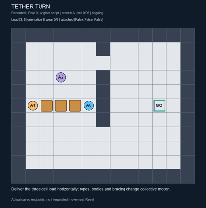
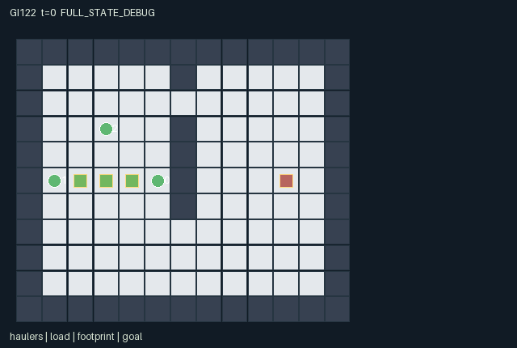

GI122 / SPATIAL
系绳转运
三名搬运者连接各自接口，以同步拉动或转向搬运大件，绳长、空间与磨损约束动作。
Original saved demonstration
Recorded native state, often authored scripts or interventions; information scope and failures are preserved in the original provenance. This is a saved demonstration, not live browser play.

Release verification episode
Untrained uniform legal actions. Actual JAX state sampled along the full original episode; full-state debug camera. No human performance or learning claim.

Run this game
crucibles play --game 122
Start Python locally, then open the address printed by the terminal. Installation, multiplayer, takeover and keyboard controls →
Objective, rewards & ending
Exact task contract
{
"objective": "Cooperatively deliver the three-cell load to center (10,5) with horizontal footprint.",
"natural_termination": "Shared success when center equals goal and orientation is even; shared failure at wear >= 6. Natural completion takes priority over H=96.",
"interaction": "Attached joint action sums determine translation and torque; every tether length and every body can veto a collective proposal. Detachment changes both available force and geometric access.",
"observation_access": "Fully public physical world; observations expose all positions, ropes, load orientation/wear, static walls, goal, clock and displayed event flags. Own port identity is explicitly encoded."
}Declared per-step reward bounds: -1.1 to 1.1. Observability: fully_observable.
Rules
- Three haulers attach only to their own oriented ports within Manhattan distance two.
- Two matching attached directional commands create one-cell load motion; attached commands also attempt body movement.
- Any attached brace stops collective translation and turning. Two simultaneous bracers remove one wear.
- Two matching turn votes propose a quarter-turn; load footprint, bodies, walls and all attached ropes must fit.
- Agent destinations occupied at the start of a step and contested destinations are blocked. Swaps are blocked.
- The north wall opening fits a horizontal load; the wider south route permits other orientations.
- Conflicting pulls and rejected collective moves increase wear. Wear six ends the task.
- Deliver the load center to the flag in a horizontal orientation. The horizon is 96 live transitions.
Original mechanism document (historical status wording retained)
# Tether Turn — three ports and a shared bulky load Status: AUTHORED_NOT_EXECUTED. This initial train-only source was written for game-v3-00122, ordinal 122, attempt 00. No candidate import, compilation, transition, rollout, JIT, vmap, numerical parity check, rendering, training or test-set use occurred. Source SHA256: 31bc46089b1cd28acd11e0749f7a2d9f2f2460bf9d7fb1023255ce684d3af220. ## Boundary and lifecycle A=3, O=171, U=9, H=96. All state leaves have a fixed declared key, shape and int32/bool dtype; observations and rewards are float32. Reset consumes only its supplied key; no external state, time, cache, file or network is part of the kernel. The scalar t starts at zero. A nonterminal call advances it once. Natural termination takes precedence over the horizon. An already-terminal call preserves every leaf and observation, preserves its terminal cause and clock, and returns zero rewards and all dones true. There is no raw auto-reset. The final tree operation preserves each reset leaf's dtype explicitly. Every in-range action is a legal command attempt while the episode is live. A blocked movement, absent resource, wrong recipe, unavailable object or cooldown causes the specified deterministic wait/no-effect outcome. Out-of-range integers map to action 0. At joint termination only action 0 is legal. No role is removed independently; completed contributors can still help until joint completion. The role adapter must preserve these masks and semantics. - reset: candidate.py:42 - observe: candidate.py:83 - legal_actions: candidate.py:80 - raw_step: candidate.py:102 ## Actual mechanism and timing The world is a 13 by 11 grid, with interior coordinates x=1..11 and y=1..9. A vertical partition at x=6 has a one-row north opening at y=2 and a wider opening at y=7..9. The actual load occupies center minus axis, center, and center plus axis. Orientation has four values; although opposite orientations share a footprint, they reverse port assignments. Port 0 is the positive endpoint, port 1 the negative endpoint, and port 2 the perpendicular flank. Geometry is implemented at candidate.py:14; the wall layout is at candidate.py:46. A toggle detaches an attached hauler or attaches a detached hauler only within distance two of its own current port. A hauler cannot choose another role's port. Each attached cardinal command contributes its unit direction to the shared force; axis ties choose x through the first argmax. A component magnitude of at least two proposes one load-cell displacement. Two equal-sign turn votes propose one quarter-turn, with turning taking priority over translation. An attached brace vetoes both. These are commands transmitted through a tether, so a blocked individual body can still exert traction; the resulting load/body configuration must satisfy all collision and rope constraints. Causal aggregation and priorities are at candidate.py:115, candidate.py:119 and candidate.py:121. First the kernel tests the proposed load footprint and resolves each agent's cardinal move against map, proposed footprint, old occupied cells and contested targets. No swaps or follow-through into another agent's just-vacated cell occur. All attached ropes must then be at most two Manhattan units and the final load must not cover an agent. A rejected collective proposal retains the previous load pose and resolves safe individual movements against the previous footprint and anchors. That fallback lets partners reposition without silently moving the payload; see candidate.py:126, candidate.py:129 and candidate.py:130. Wear is persistent. Two or more opposing attached pulls with no sufficient force, or a rejected collective move/turn, add one wear. Two attached brace commands remove one wear, clipped to 0..6. Brace coordination therefore trades time for risk reduction and may prevent another partner's desired translation. The reward shared by all three roles is 0.01 times the reduction in Manhattan distance to the goal, minus 0.02 for a jam, plus one for success and minus one for failure. Reward shaping telescopes with goal distance; no claimed learning gain follows. Wear and rewards are at candidate.py:138, candidate.py:140 and candidate.py:154. The side port can obstruct the narrow north passage even when the load itself fits. One plausible plan is to detach and relocate the stabilizer while the endpoint haulers use the horizontal passage. Another is to travel through the wider south route with a different orientation and retained third tether. Neither plan has been numerically attempted. A partner may need to wait, brace, release or reposition instead of copying the leader's movement. A rotation without enough space or rope slack can be harmful; turning is an actual constrained configuration change, not a sprite rotation. The scene binds both the real three-cell footprint and the three physical anchor coordinates. Active tether markers and the haulers' attachment/length attributes describe the actual connections; they are not invented line animation. A future renderer may connect a hauler to its assigned anchor using these exact endpoints. The current declarative glyph scheme does not itself prove that such replay animation has been reviewed. Declared logical invariants additionally include: each attached rope length <=2, no agent/load overlap, three collinear adjacent load cells determined by orientation, unchanged map, and no external reset. Future R0 must check these against actual trajectories. Changing opening geometry, port assignment, allowed rope length or the brace rule could change useful coordination; such variants are proposed scientific factors, not implemented or tested generalization results. ## Observation contract - Columns 0 through 5 (public): All agent xy coordinates, agent order then xy; divided by 12 - Columns 6 through 8 (public): Per-agent tether attachment flags - Columns 9 through 11 (public): Per-agent Manhattan tether length, divided by 2; zero when detached - Columns 12 through 13 (public): Shared load center xy divided by 12 - Columns 14 through 17 (public): Load orientation one-hot: east, south, west, north - Columns 18 through 18 (public): Load wear divided by 6 - Columns 19 through 20 (public): Goal center xy divided by 12 - Columns 21 through 23 (self): Own role identity one-hot - Columns 24 through 166 (public): Public 11 by 13 static tile map flattened in yx order - Columns 167 through 167 (public): Clock divided by 96 - Columns 168 through 170 (public): Latest accepted load translation, accepted turn, and jam flags The returned observation is the policy information boundary. Entity visibility and declared attributes refer to the same actual state and access rules. The complete static tile layout is public; a debug/full-state display must be labelled separately from a role view. Undeclared internal leaves are not an invitation to expose private values in a role renderer. ## Fixed author scripts and paired interventions playthrough.json contains fixed joint integer commands, an explicit seed and UNEXECUTED_AUTHOR_HYPOTHESIS status for each script. Stop at the first done. These scripts were constructed from the written rules without local execution, simulation, numerical action search or feedback from other candidates. Prefix/branch comparisons state predicted causal differences only; there is no observed trace, successful episode, solvability certificate, ranking or learned policy. ## Community provenance and delivery boundary Only this batch's hash-verified design/request, 20 listed inputs and copied public references were used. JaxMARL's README supplies multi-agent integration context, including agent-keyed public APIs; Pgx supplies JAX-native game-state and legal-action-mask design context. Craftax supplies an example of spatial compositional game mechanics. PureJaxRL and the Craftax PPO RNN baseline are algorithm/integration references, not a game library, copied environment, or replacement learner. No upstream source lines, layouts or benchmark rules were copied into this original kernel. Exact copied-input hashes and original official URLs are retained in generation_record.json. The coordinator owns the separate public JaxMARL adapter, sealed runtime validation, actual state replay, RGB/animated presentation, playback controls and community review. This authored kernel and declarative scene do not establish those acceptance outcomes. Structural/AST screening is separate from numerical validation. Passing future interaction or interface checks would not by itself establish strategic richness, reward learning, meta-learning, non-isomorphism or transfer. No new scientific performance gate is added.
Commands
Roles & abilities
agent_0 Fore-port hauler: attachment at the oriented forward endpoint
agent_1 Aft-port hauler: attachment at the opposite endpoint
agent_2 Side-port stabilizer: attachment on the clockwise-relative upper flank
Observation permissions
Training receives only the original observation rows. Role cameras use declared visibility; debug cameras are explicitly marked. Local benchmark records log debug exposure and role takeover history.
Exact observation layout
[
{
"slice": [
0,
6
],
"meaning": "All agent xy coordinates, agent order then xy; divided by 12",
"visibility": "public"
},
{
"slice": [
6,
9
],
"meaning": "Per-agent tether attachment flags",
"visibility": "public"
},
{
"slice": [
9,
12
],
"meaning": "Per-agent Manhattan tether length, divided by 2; zero when detached",
"visibility": "public"
},
{
"slice": [
12,
14
],
"meaning": "Shared load center xy divided by 12",
"visibility": "public"
},
{
"slice": [
14,
18
],
"meaning": "Load orientation one-hot: east, south, west, north",
"visibility": "public"
},
{
"slice": [
18,
19
],
"meaning": "Load wear divided by 6",
"visibility": "public"
},
{
"slice": [
19,
21
],
"meaning": "Goal center xy divided by 12",
"visibility": "public"
},
{
"slice": [
21,
24
],
"meaning": "Own role identity one-hot",
"visibility": "self"
},
{
"slice": [
24,
167
],
"meaning": "Public 11 by 13 static tile map flattened in yx order",
"visibility": "public"
},
{
"slice": [
167,
168
],
"meaning": "Clock divided by 96",
"visibility": "public"
},
{
"slice": [
168,
171
],
"meaning": "Latest accepted load translation, accepted turn, and jam flags",
"visibility": "public"
}
]Entity visibility & attributes
[
{
"id": "haulers",
"kind": "agent",
"count": 3,
"position": [
"agent_xy"
],
"active": [
"agent_active"
],
"visibility": [
"agent_visible"
],
"attributes": [
{
"state_path": [
"attached"
],
"meaning": "Tether attached",
"display": "flag"
},
{
"state_path": [
"tension"
],
"meaning": "Tether length (0-2)",
"display": "number"
}
]
},
{
"id": "load",
"kind": "object",
"count": 1,
"position": [
"load_xy"
],
"active": [
"load_active"
],
"visibility": [
"load_visible"
],
"attributes": [
{
"state_path": [
"load_orientation"
],
"meaning": "Orientation (E,S,W,N)",
"display": "category"
},
{
"state_path": [
"wear"
],
"meaning": "Accumulated wear (0-6)",
"display": "bar"
}
]
},
{
"id": "footprint",
"kind": "object",
"count": 3,
"position": [
"load_cells"
],
"active": [
"cell_active"
],
"visibility": [
"cell_visible"
],
"attributes": []
},
{
"id": "tethers",
"kind": "object",
"count": 3,
"position": [
"anchor_xy"
],
"active": [
"anchor_active"
],
"visibility": [
"anchor_visible"
],
"attributes": [
{
"state_path": [
"tension"
],
"meaning": "Attached Manhattan rope length",
"display": "number"
}
]
},
{
"id": "goal",
"kind": "landmark",
"count": 1,
"position": [
"goal_xy"
],
"active": [
"goal_active"
],
"visibility": [
"goal_visible"
],
"attributes": []
}
]Actual verification & provenance
Per-game execution receipt
{
"game": "gi122",
"status": "PASS",
"verification_revision": 2,
"source_sha256": "31bc46089b1cd28acd11e0749f7a2d9f2f2460bf9d7fb1023255ce684d3af220",
"seed": 20261101,
"runtime": {
"jax": "0.4.38",
"numpy": "1.26.4",
"devices": [
"TFRT_CPU_0"
]
},
"dimensions": {
"num_agents": 3,
"observation_size": 171,
"num_actions": 9,
"max_steps": 96
},
"checks": {
"eager_reset": {
"status": "PASS",
"seconds": 1.4886903762817383
},
"observation_spaces_legal_masks": {
"status": "PASS",
"seconds": 0.22107434272766113
},
"eager_step": {
"status": "PASS",
"seconds": 1.9878380298614502
},
"jit_reset": {
"status": "PASS",
"seconds": 0.1276257038116455
},
"jit_step": {
"status": "PASS",
"seconds": 0.7272543907165527
},
"eager_jit_integer_parity_float_measurement": {
"status": "PASS",
"seconds": 0.00099945068359375
},
"jit_vmap_reset": {
"status": "PASS",
"seconds": 0.1356801986694336
},
"jit_vmap_step": {
"status": "PASS",
"seconds": 0.49660658836364746
},
"outer_autoreset_api": {
"status": "PASS",
"seconds": 0.638512134552002
},
"full_original_horizon_episode_and_render": {
"status": "PASS",
"seconds": 0.7267382144927979
}
},
"human_scores": null,
"browser_controls": "PENDING",
"failures": [],
"elapsed_seconds": 7.062658309936523,
"float_parity_max_abs": 5.960464477539063e-08,
"numerical_parity": "UNDETERMINED_NONZERO_FLOAT_DIFFERENCE",
"raw_terminal_absorbing": "PASS",
"terminal_outer_reset": "PASS",
"episode_steps": 96,
"scripted_random_returns": [
-0.019999999552965164,
-0.019999999552965164,
-0.019999999552965164
],
"terminal": true,
"demo_information": "FULL_STATE_DEBUG",
"demo_frames": 25,
"render_roles_checked": 3
}Chromium control verification
{
"game": "gi122",
"status": "PASS",
"human_scores": null,
"engineering": true,
"checks": [
"catalog_selected_and_real_native_reset",
"dom_queue_and_native_step",
"second_participant_ownership_and_native_joint_step",
"all_roles_individually_controllable_no_role_cap",
"explicit_debug_camera",
"release_to_pure_ai_without_reset"
],
"seconds": 3.8659214973449707
}Original identity and file hashes
{
"id": 122,
"key": "gi122",
"title": "系绳转运",
"summary": "三名搬运者连接各自接口，以同步拉动或转向搬运大件，绳长、空间与磨损约束动作。",
"tags": [
"协同搬运",
"几何约束"
],
"family": "spatial",
"dimensions": {
"num_agents": 3,
"observation_size": 171,
"num_actions": 9,
"max_steps": 96
},
"source_sha256": "31bc46089b1cd28acd11e0749f7a2d9f2f2460bf9d7fb1023255ce684d3af220",
"manifest_sha256": "94fd003f4f792f3119178c36b0976b3a0e69e352b78812d801eb3b1b65085f04",
"files": [
{
"file": "candidate.py",
"sha256": "31bc46089b1cd28acd11e0749f7a2d9f2f2460bf9d7fb1023255ce684d3af220",
"bytes": 9536,
"origin": "work/exp_2/game_incubator_v3/community_games222_225_visualization_root222_v1/native154_candidate/registry/v2/games/game-v3-00122/candidate.py"
},
{
"file": "manifest.json",
"sha256": "94fd003f4f792f3119178c36b0976b3a0e69e352b78812d801eb3b1b65085f04",
"bytes": 11702,
"origin": "work/exp_2/game_incubator_v3/community_games222_225_visualization_root222_v1/native154_candidate/registry/v2/games/game-v3-00122/manifest.json"
},
{
"file": "scene.json",
"sha256": "91d32864640035b94d970c323e496a98711419e5d74a046a03c681caebf53dfd",
"bytes": 6126,
"origin": "work/exp_2/game_incubator_v3/community_games222_225_visualization_root222_v1/native154_candidate/registry/v2/games/game-v3-00122/scene.json"
},
{
"file": "mechanism.md",
"sha256": "2d9db15856335bd1f1f1a24b44927bf6fc852c968a8b2016515b13b4e9788ebf",
"bytes": 8710,
"origin": "work/exp_2/game_incubator_v3/sources/game-v3-00122/attempt_00/mechanism.md"
},
{
"file": "playthrough.json",
"sha256": "1e0d9075eed3b5f9f50d0de29130ea33c500155adca03396f5b82468de43db7b",
"bytes": 3982,
"origin": "work/exp_2/game_incubator_v3/sources/game-v3-00122/attempt_00/playthrough.json"
}
],
"original_status": "NATIVE154_REFERENCE",
"original_saved_replay": true,
"release_validation": "PASS",
"human_scores": null,
"browser_validation": "PASS"
}